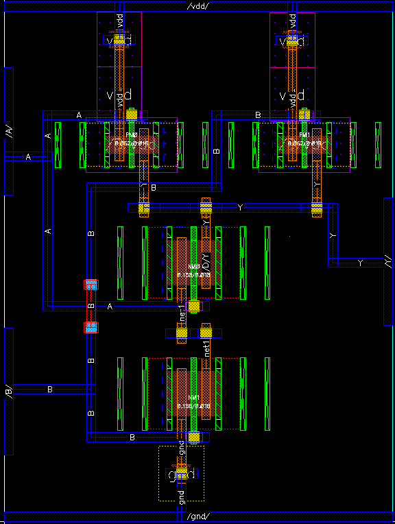
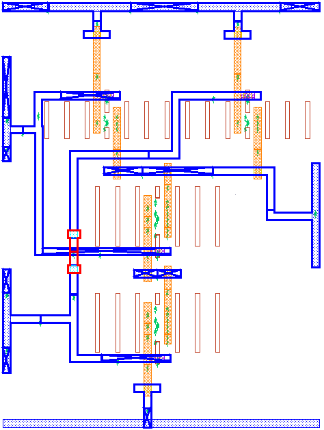
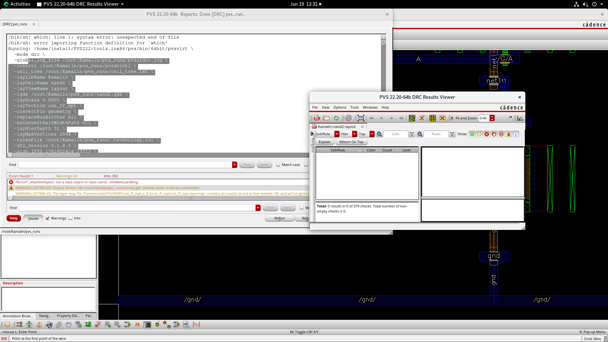
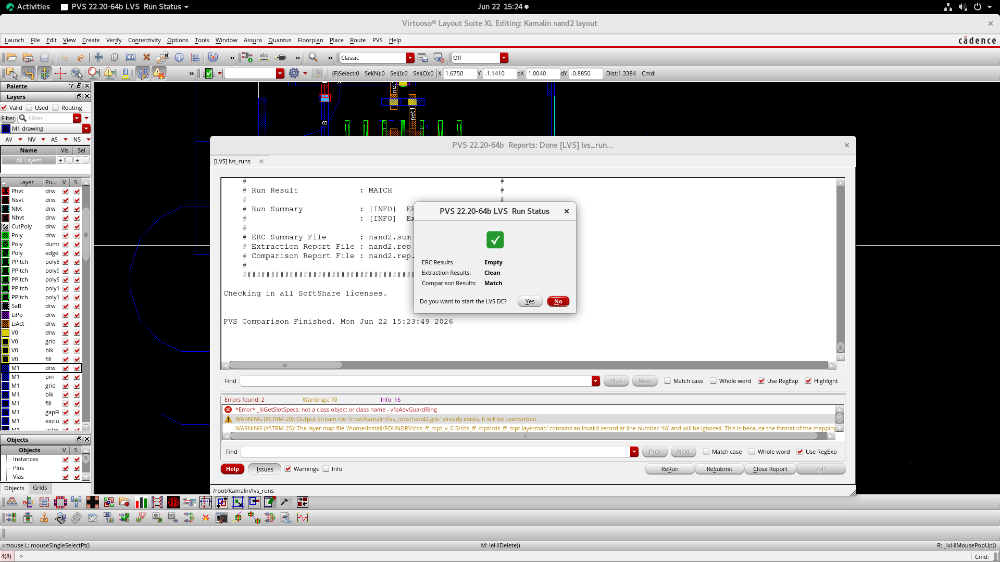

Does the geometry obey the rules?
Checks widths, spacing and enclosure. The saved NAND report has zero violations across 379 checks.
Read DRC summary ↗The foundation of the counter: a two-input NAND, drawn, routed and checked in Virtuoso. Select any image to inspect it at full size.

Parallel PMOS devices pull the output high. Series NMOS devices pull it low when both inputs are high.

Open extraction recording ↗Checks widths, spacing and enclosure. The saved NAND report has zero violations across 379 checks.
Read DRC summary ↗Compares devices and connectivity. The saved NAND comparison reports MATCH.
Read LVS comparison ↗Quantus adds parasitic resistance and capacitance to the NAND extracted view.
Read extraction log ↗Physical verification covers the NAND cell. Higher-level simulations can use its extracted view; a complete counter layout was outside this project’s scope. These are saved lab results, not newly executed checks.
| Bit | Toggle input | Ideal frequency |
|---|---|---|
| Q0 | 1 | CLK / 2 |
| Q1 | Q0 | CLK / 4 |
| Q2 | Q0 · Q1 | CLK / 8 |
| Q3 | Q0 · Q1 · Q2 | CLK / 16 |
All four flip-flops share the clock. Toggle-enable logic determines which bits change.
Trace order and initialization differ between some saved runs. Compare named signals and settled transitions. These plots alone do not establish worst-case timing or a controlled measure of parasitic effects.
LiAct width violations, supply-pin alignment, and unmatched labels were part of the lab work. The screenshots preserve that process.


Tool and environment warnings remain in the archived logs; a passing geometry or comparison result does not clear every diagnostic.
The reconstructed model aliases have not been rerun here in Cadence.
The repository README contains the expanded illustrated guide and original result links.
Open the complete guide ↗